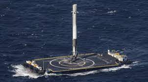
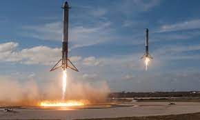

스페이스X(영어: SpaceX, 공식 회사명 Space Exploration
Technologies Corp.)는 미국의 항공우주 장비 제조/생산 및 우주 수송 회사이다.
본사는 캘리포니아 주 호손에 위치해 있다.
우주로의 수송 비용을 획기적으로 절감하고 화성을 식민지화하겠다는 목표 아래 2002년 인터넷 벤처기업 페이팔의 창업자인 일론 머스크에 의하여 설립되었다.
설립 이래
스페이스X는 민간 항공우주 기업으로써 지금까지 수많은 업적을 거두어 왔다. 세계 최초로 민간 액체 추진 로켓을 지구 궤도에 도달시켰고 (2008년 팰컨 1) 우주선을 발사, 궤도 비행, 회수했으며 (2010년 드래곤) 국제 우주 정거장에 우주선을 도킹한 (2012년 드래곤) 세계 최초의 민간 항공 우주 기업이다.
또한 세계 최초로 로켓 1단 부스터를 역추진해 착륙시키는 데 성공하고  (2015년 팰컨 9) 이를 로켓 발사에 재사용하였다 (2017년 팰컨 9).
2017년 3월까지 스페이스X는 화물 재보급 계약의 일환으로 국제 우주 정거장에 총 10대의 우주선을 발사했다. NASA는 또한 2011년 스페이스X를 상업용 유인 우주선 개발 프로젝트의 추진 계획 지원 대상자로 선정하였으며, 유인 드래곤 우주선을 개발 중에 있다.
유인 우주선은 국제 우주 정거장으로 우주 비행사들을 수송하고 이들을 지구로 무사히 귀환시키는 임무에 운용될 예정이다.
스페이스X는 2011년 재사용 가능한 로켓 발사 시스템 개발을 발표했다. 그리고 2015년 12월, 팰컨9의 1단 추진 로켓이 발사대 근처에 위치한 착륙장에 성공적으로 수직 역추진 착륙 하였다.
2016년 9월, 스페이스X의 CEO 엘론 머스크는 행성간 이동 시스템 (ITS)의 구체적인 계획을 공개했다.